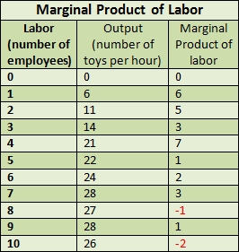
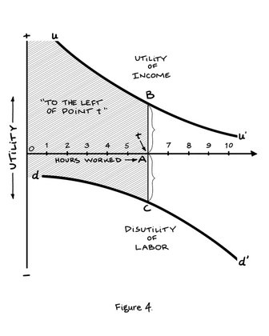

Contents · 9 slides
- John Maynard Keynes
- Keynes Fact Sheet
- Why the General Theory?
- The Postulates of Classical Economics
- The Postulates of Classical Economics
- Frictional Unemployment
- Voluntary Unemployment
- Involuntary Unemployment
- Increasing Employment
1 John Maynard Keynes
- The Economist as Social Therapist
2 Keynes Fact Sheet
- Born 1883, died 1946
- Major works:
- A Treatise on Probability
- The Economic Consequences of the Peace
- Treatise on Money
- General Theory of Employment, Interest and Money
3 Why the General Theory?
- “I have called this book the General Theory of Employment, Interest and Money, placing the emphasis on the prefix general. The object of such a title is to contrast the character of my arguments and conclusions with those of the classical theory of the subject... I shall argue that the postulates of the classical theory are applicable to a special case only and not to the general case, the situation which it assumes being a limiting point of the possible positions of equilibrium. Moreover, the characteristics of the special case assumed by the classical theory happen not to be those of the economic society which we actually live, with the result that its teaching is misleading and disastrous if we attempt to apply it to the facts of experience.” – General Theory, p. 3
4 The Postulates of Classical Economics
- 1. The wage is equal to the marginal product of labour.

5 The Postulates of Classical Economics
- 2. The utility of the wage when a given volume of labour is employed is equal to the marginal disutility of that amount of employment.

6 Frictional Unemployment
- Classical economics, per Keynes, recognized only voluntary and friction unemployment.
- Frictional unemployment arises because labour cannot be reassigned instantly. Potential workers must, for instance, search help wanted ads.
7 Voluntary Unemployment
- When workers hold out for higher wages, they are voluntarily unemployed.
8 Involuntary Unemployment
- Keynes added the category of involuntary unemployment